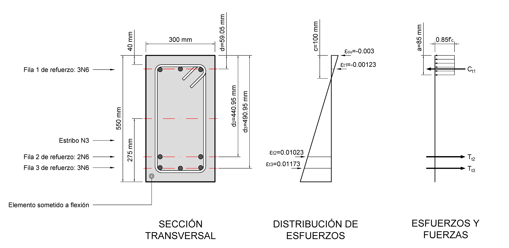

Esta convención es la base para construir diagramas de interacción.
Convención de signos: Para simplificar la suma, se tomó el sentido antihorario como positivo, resultando en una suma escalar de magnitudes de momento respecto al centro ($h/2$).
1. Definición de la Sección

Figura 1. Detalles geométricos y disposición del refuerzo.
Calculamos las fuerzas internas y sus momentos respecto al centro ($h/2 = 275$ mm):
Componente
Fuerza (kN)
Brazo $z_i$ (m)
Momento $M_i$ (kNm)
Concreto ($C_c$)
-586.5
$a/2 - 0.275 = \mathbf{-0.2325}$
136.4
Fila 1 (Comp)
-210.1
$d_1 - 0.275 = \mathbf{-0.2159}$
45.4
Fila 2 (Tens)
+239.4
$d_2 - 0.275 = \mathbf{0.1659}$
39.7
Fila 3 (Tens)
+359.1
$d_3 - 0.275 = \mathbf{0.2159}$
77.5
TOTALES
$P_n = \mathbf{-198.1}$ kN
---
$M_n = \mathbf{299.0}$ kNm
Interpretación Física: Aunque la sección resiste 299 kNm, lo hace "ayudada" por una compresión externa de 198.1 kN. Para que sea una viga real, el concreto y el acero deben arreglárselas solos para que $P_n = 0$.
5. Equilibrio de Viga Alcanzado ($P_n = 0$)
Eje Neutro que Produce Pn=0: $c = 79.91$ mm
Pn = 0.00 kN
Mn = 258.2 kNm
6. ¿Cómo hallar este valor de $c$?
Matemático Ecuación cuadrática o polinómica.
Software Solver en Excel o scripts de Python.
Numérico Newton-Raphson o Bisección.
Laboratorio Virtual: Equilibrio Real (3 Filas)
Ajusta c para equilibrar la sección. Objetivo: $P_n \approx 0$
Ficha Técnica del Modelo:
Este laboratorio calcula el equilibrio de una sección considerando un recubrimiento libre de 40 mm, estribos #3 y refuerzo longitudinal #6.
Las variables As1, As2 y As3 representan el área total de acero en cada fila.
f'c = 28 MPafy = 420 MPa
Sobra Compresión -198.1 kN
Deformaciones ($\epsilon$)
Fuerzas Internas
ESTADO DE DUCTILIDAD (NSR-10) --
MOMENTO NOMINAL RESISTENTE ($M_n$) -- kNm
7. Clasificación de la Sección y Ductilidad
Según los límites de deformación de ACI 318 21.2.2 : NSR-10 C.10.3.3:
Nota: Para un acero de $f_y = 420$ MPa, la deformación de fluencia es $\epsilon_{ty} = f_y / E_s = 0.0021$. Una sección Dúctil asegura que el acero fluya considerablemente antes del aplastamiento del concreto, permitiendo la redistribución de momentos y aviso previo a la falla.